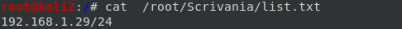
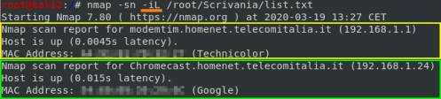

nmap
In this phase we will use most of the time nmap(Network mapper) that is also available with a GUI called Zenma
Features and options
--packet-trace → to display summary of each packet Nmap sends or receives, with output that includes:
◇ Nmap calls to the OS → calls it makes to the operating system, such as the connect() call that is made during TCP Connect scans
◇ SENT/RCVD → It shows whether a given packet is sent or received
◇ Protocol used (TCP/UDP)
◇ Source IP:Port > Dest IP:Port → source and destination IP addresses and ports
◇ Control Bits
◇ TTL
◇ Other header info
Nmap's Timing Options
Nmap has various options for scan speed built in, invoked with the -T syntax
nmap -T [timing_option] [other options]
◇ 0 → Paranoid mode: It sends packets approximately every 5 minutes. designed to scan so slowly that it will avoid detection by IDSs, falling outside of their time-sampling window. No packets are sent in parallel with a Paranoid scan; they are sent one at a time
◇ 1 → Sneaky mode: it sends packets every 15 seconds. no parallel sending(scans serially)
◇ 2 → Polite mode: 0.4 seconds between packets. no parallel sending(scans serially)
◇ 3 → Normal mode: Default, designed to not overwhelm network or miss targets/ports, scans in parallel (using -T3 changes nothing because it is the default)
◇ 4 → Aggressive mode: Waits only 1.25 seconds for probe response, scans in parallel. The Nmap documentation recommends using -T4 for "reasonably modern and reliable networks". However, some penetration testers use the default normal mode (-T3) to lower the chance of impairing the target network.
◇ 5 → Insane mode: Spends up to 15 minutes per host (gives up on that host and moves on if scan taking longer for it), waits only 0.3 seconds for probe response, scans in parallel
Output options
Instead of specify the file we ca use “-” and the correspondent output will be displayed directlyon the shell
• -oN <file.nmap> → Normal output: The normal human-readable output typically displayed on the screen will be stored into a file
• -oX <file.xml> → XML output: Creates an XML output that can be easily parsed by various tools.
• -oG <file.gnmap>→ Grepable output: Although deprecated (replaced by XML), it is still popular. This output lists each host on one line and can be easily used to search and parse with Unix tools such as grep, awl, cut, etc.
• -oA <file.nmap>: Output in normal, XML, and grepable formats at once.
example:
nmap -n -sT 192.168.1.97 -oA /tmp/192.168.1.97_connect_scan
ls /tmp/192.168.1.97_connect_scan*

gedit /tmp/192.168.1.97_connect_scan.gnmap
Input options
-iL → input list file
example:
nmap -sn -iL /root/Scrivania/list.txt

